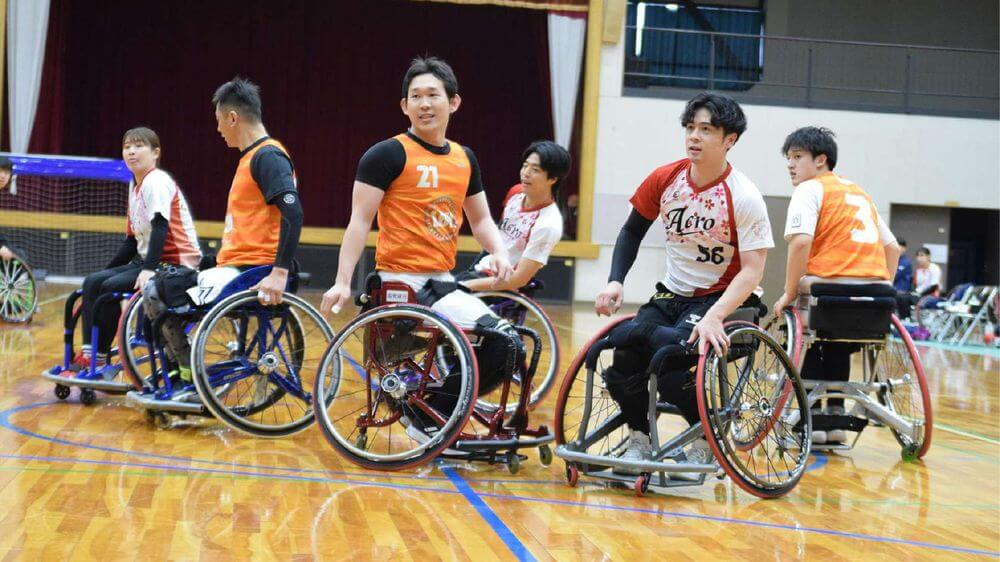
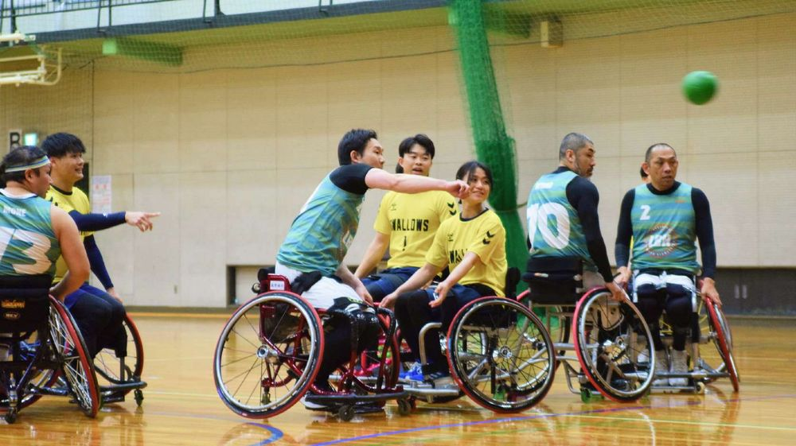
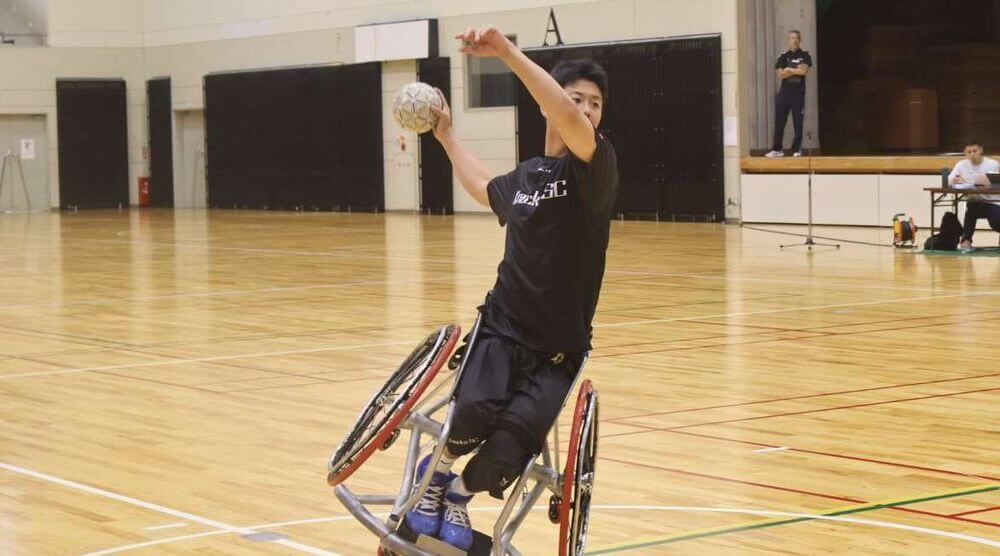
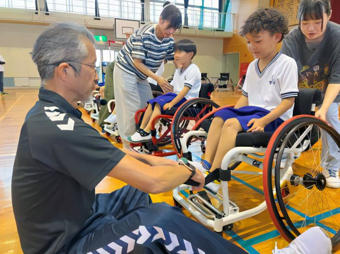
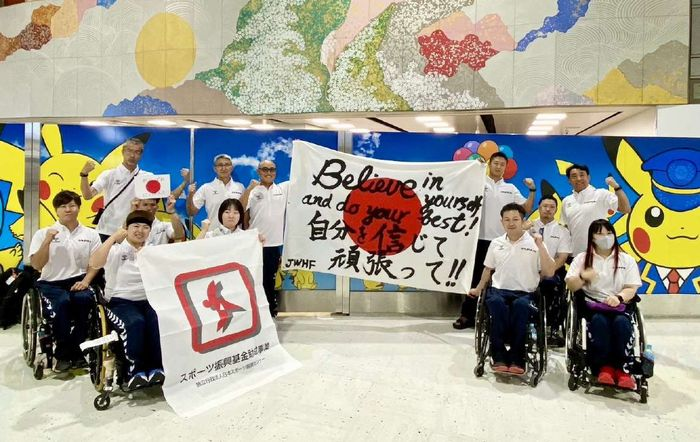
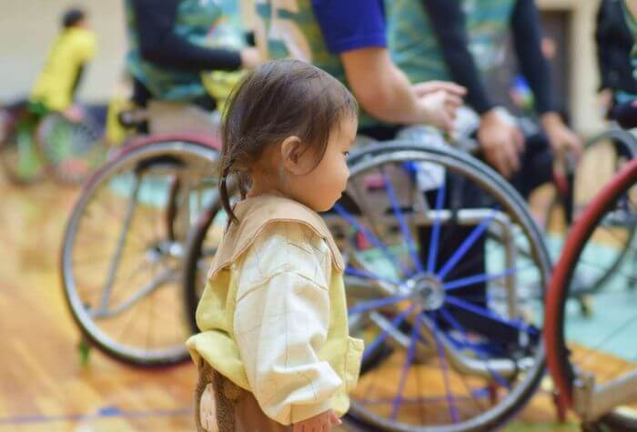
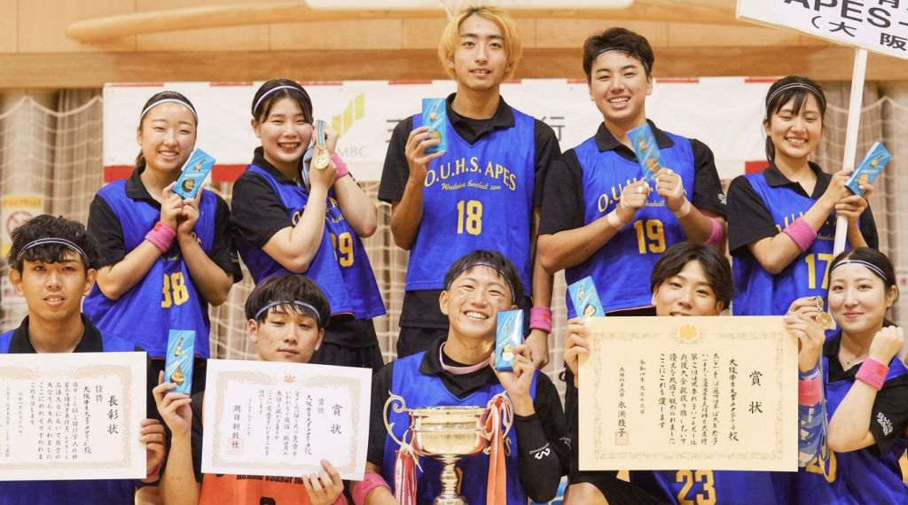

POINT1
垣根がない
障がいの有無・年齢・性別を越えて、同じコートで本気でぶつかります。
ここまでフラットに混ざれる競技は、そうありません。

JAPAN WHEELCHAIR HANDBALL
車いすハンドボールの新たな道へ
多くの人が同じコートで
主役になれる。
車いすを自在に操り、パスをつなぎ、シュートを
放つ。
まだ広くは知られていない、けれど確かに
面白い競技が、日本にあります。
車いすハンドボールとは
障がいのある人もない人も、子どもも大人も、
同じコートで本気で競い合えます。
そんなスポーツは、そう多くありません。
京都で
誕生
1988
世界選手権
開始
2022
日本代表
世
界2位
2026
目指すは
世
界1位
now
1988年京都で生まれた日本の車いすハンドボールは、
いま世界へ広がりはじめています。
世界選手権が始まったのは2022年、
日本代表が世界に立ったのは2024年。
この物語はまだ、 始まったばかりです
だからこそ、 この競技の「これから」を
一緒につくっていける面白さがあります。
車いすハンドボールの魅力
障がいを越えて、本気でぶつかり合う。
その光景そのものが、心を動かす。
POINT1
障がいの有無・年齢・性別を越えて、同じコートで本気でぶつかります。
ここまでフラットに混ざれる競技は、そうありません。

POINT2
車いすを自在に操り、パスを回し、数的優位を作って崩します。
チームがかみ合った瞬間の迫力があります。

POINT3
プッシュ、ブレーキ、ターン。
車いすだからこその技は、観るほど奥深いものです。

押さえる要点は5つだけ
4人制はチーム全員が同じユニフォームを着用します。
固定のゴールキーパーはいません。
日本国内では長らく6人制が親しまれてきました。
ハンドボールの「3歩ルール」にあたります。
1回のプッシュで長く早く進むテクニックやブレーキの技術が生まれます。
立ち上がれないぶん、ゴールの高さを調整しています。
また、通常は1得点のところ、以下のクリエイティブで難易度の高いプレーでゴールすると、スペクタクルゴールとなり2点になります。
初めての人から日本代表を目指す選手まで、それぞれのレベルでプレーできます。
初心者も重度の障がいがある人も、同じルールで一緒に楽しめます。
障がいの程度に応じて選手一人ひとりに1〜4点の持ち点がつき、コート上の合計が上限を超えないようにチームを組みます。
障がいの重い人も軽い人も、同じコートで役割を持ちます。
※コート上の合計上限は、4人制11点/6人制17点
（6人制の持ち点制は国際ルールのみ。国内大会は持ち点を使わない独自ルールで実施しています）
車いすハンドボールだからこそ
この競技が育てるのは、
強いチームだけではありません。
障がいがあってもなくても、誰かが自分の役割を見つけ、
できることを増やし、変わっていきます。
この競技はいま、2032年ブリスベンパラリンピックでの正式種目採択を目指して、
世界で実績を積み上げている最中です。
プレーする人も、支える人も、応援する人も混ざり合って、
日本にまだない新しい文化を、一緒につくっていけます。
車いすハンドボールには、その可能性があります。

障がいの有無を越えて挑戦し、役割を持ち、成長できる場を広げます。

競技を続け、語り、伝える。日本に共生スポーツの文化を根づかせます。

選手も、指導者も、支える企業も。未来の担い手を一緒に増やします。

支える側と、される側じゃない。 一緒に育てる仲間を、 いつでも歓迎します。